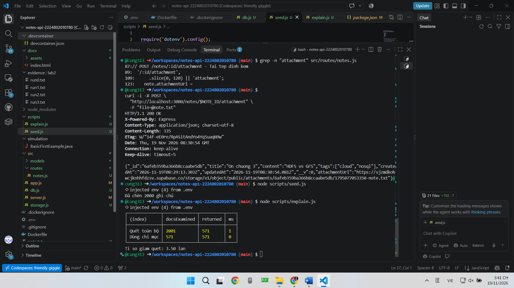
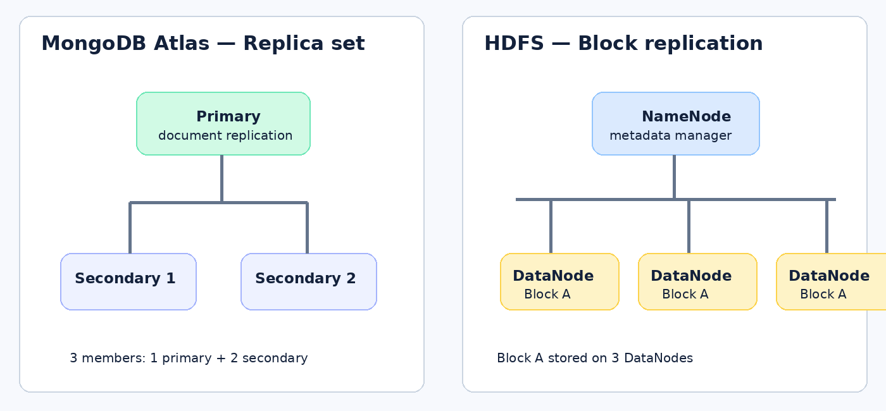
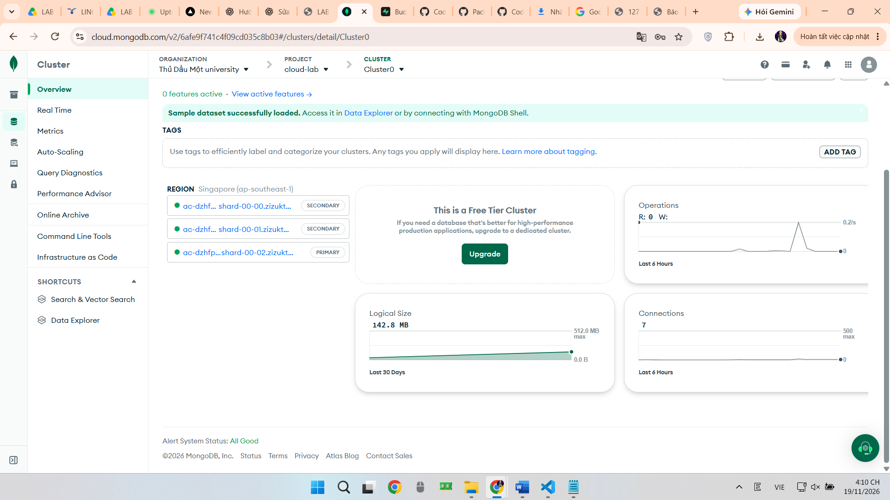
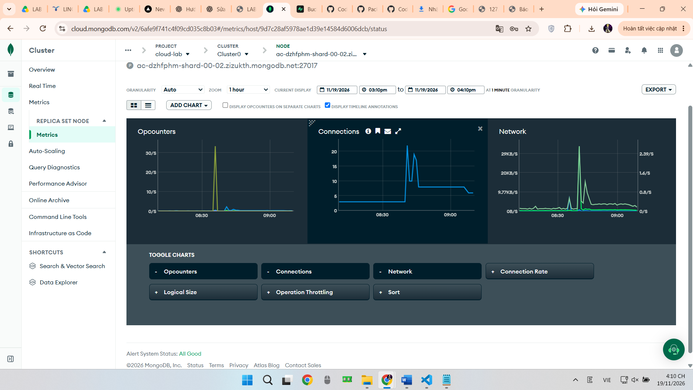
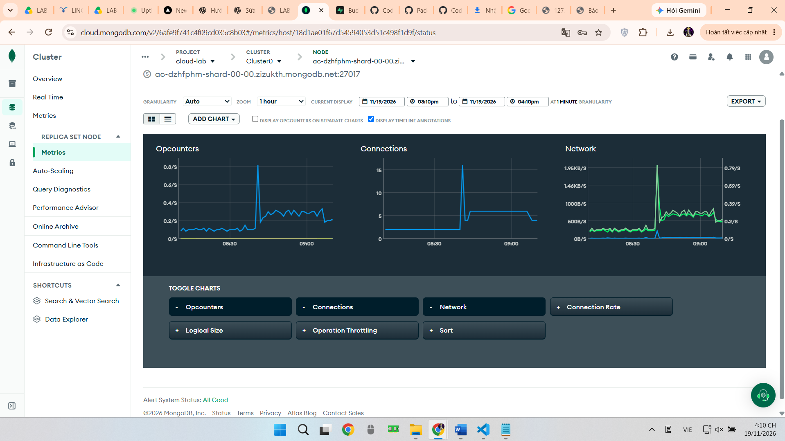
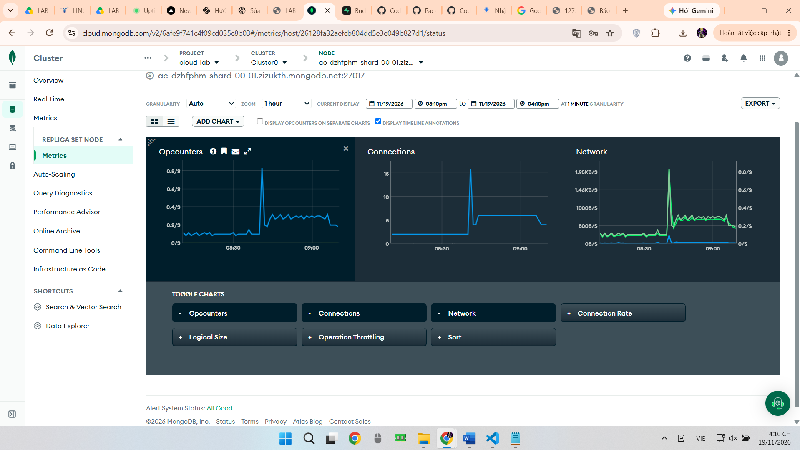
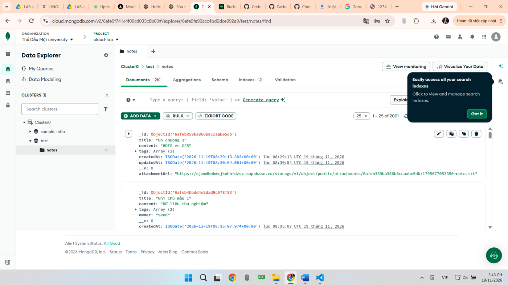
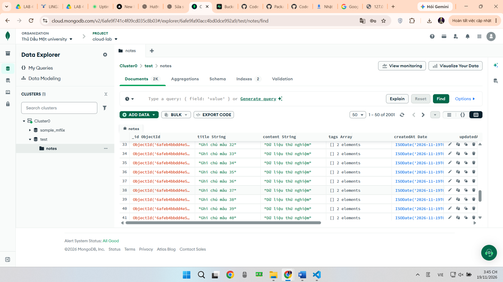
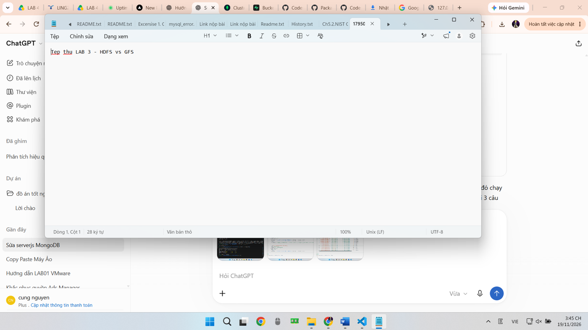

01. Tổng quan kết quả
API CRUD đã kiểm tra các thao tác tạo, đọc, sửa, xóa. Endpoint tải đính kèm trả HTTP 200 và lưu attachmentUrl vào tài liệu MongoDB. Script sinh dữ liệu xác nhận đã chèn 2.000 ghi chú mẫu.
Môi trường thực tế: MongoDB Atlas, database test, collection notes; Supabase Storage bucket attachments. Database test được giữ nguyên vì hệ thống đã hoạt động và có dữ liệu kiểm chứng.
02. Kiến trúc & thực hành
MongoDB Atlas — DBaaS
Mongoose kết nối MongoDB trước khi Express mở cổng 3000. Model Note sử dụng title, content, tags, attachmentUrl, owner cùng timestamps.
CRUD: POST /notes (201), GET /notes (200), PUT /notes/:id (200), DELETE /notes/:id (204). Các trường hợp HTTP 400 và 404 đã được xác nhận bằng ảnh Terminal ngày 19/11/2026.
Supabase — Object Storage
Tệp note.txt được gửi bằng multipart form-data tới POST /notes/:id/attachment; backend giới hạn dung lượng 2 MB và lưu đối tượng vào bucket attachments. MongoDB chỉ giữ URL đính kèm.
Upload: HTTP 200 và phản hồi có trường attachmentUrl. URL công khai được tạo theo cấu hình bucket của bài thực hành.
.env, không đưa vào GitHub Pages. Những thông tin xác thực từng xuất hiện trong ảnh cần được thu hồi/thay mới.03. Đo hiệu quả chỉ mục
Chạy node scripts/seed.js để chèn 2.000 tài liệu, tiếp theo node scripts/explain.js với bộ lọc { tags: 'docker' }. Phép đo quét toàn bộ dùng gợi ý $natural; phép đo chỉ mục dùng index tags: 1.
| Chỉ tiêu | Quét toàn bộ | Dùng chỉ mục |
|---|---|---|
| docsExamined | 2.001 | 571 |
| nReturned | 571 | 571 |
| executionTimeMillis | 1 ms | 0 ms |
Phân tích: Mức giảm là 2.001 / 571 = 3,50 lần, tương đương giảm khoảng 71,5% số tài liệu phải kiểm tra. Cả hai trả về 571 kết quả, nên đây là so sánh trên cùng truy vấn. Giá trị 0 ms là độ phân giải hiển thị của phép đo, không có nghĩa truy vấn không tốn thời gian; không suy diễn hiệu năng quy mô lớn chỉ từ một lần chạy.

04. MongoDB Atlas & HDFS

| Tiêu chí | MongoDB replica set | HDFS |
|---|---|---|
| Đơn vị nhân bản | Dữ liệu database/collections (qua đồng bộ dữ liệu và oplog) | Khối dữ liệu (block) |
| Điều phối | Primary và các secondary | NameNode quản lý metadata; DataNode giữ block |
| Mục tiêu | Khả dụng, phục hồi sau lỗi, tự động bầu primary | Độ bền dữ liệu, chịu lỗi khi hỏng DataNode |
Ảnh quan sát thực tế ngày 19/11/2026 cho thấy Cluster0 trên gói Free Tier tại Singapore (ap-southeast-1), gồm 1 primary (shard-00-02) và 2 secondary (shard-00-00, shard-00-01). Hình vẽ HDFS là minh họa khái niệm, không phải sơ đồ của cluster HDFS đã triển khai.
Minh chứng nhân bản thực tế — Cluster0




Giới hạn: Đây là ảnh quan sát vai trò và hoạt động của từng nút; chưa có thử nghiệm failover, nên không kết luận rằng đã trực tiếp kiểm chứng việc bầu chọn primary khi mất nút.
curl -i -X POST http://localhost:3000/notes \
-H "Content-Type: application/json" \
-d '{"content":"Test 400"}'
curl -i http://localhost:3000/notes/507f1f77bcf86cd799439011
curl -i -X POST "http://localhost:3000/notes/$NOTE_ID/attachment"Hệ thống cũng trả 201 cho POST tạo ghi chú, 200 cho GET/PUT/upload và 204 cho DELETE theo các ảnh minh chứng trước.
06. Minh chứng


test.notes chứa 2.001 tài liệu.
Đối chiếu yêu cầu: ảnh hiện có chứng minh upload qua API trả 200 và URL được lưu trong MongoDB; chưa có ảnh riêng chứng minh trình duyệt mở URL, hoặc ảnh màn hình bucket Supabase. Hai minh chứng này nên bổ sung nếu giảng viên yêu cầu.
07. Giải đáp và kết luận
1. Nếu mở rộng lên 2 triệu tài liệu?
Quét toàn bộ tăng tỷ lệ với số tài liệu. Index giảm tập tài liệu cần đọc khi điều kiện lọc đủ chọn lọc, nhưng mức giảm còn phụ thuộc phân bố thẻ, bộ nhớ đệm và kế hoạch truy vấn. Giới hạn thao tác/giây khiến việc tránh quét không cần thiết càng quan trọng; không thể suy ra chính xác thời gian ở 2 triệu tài liệu chỉ từ mẫu hiện tại.
2. Tại sao tệp lưu ở Supabase, chỉ URL nằm trong MongoDB?
Object Storage phù hợp dữ liệu nhị phân, tăng trưởng dung lượng và phân phối tệp; MongoDB giữ metadata để tìm kiếm, cập nhật ghi chú nhanh và tránh tăng kích thước document. Tuy nhiên cần xử lý đồng bộ khi xóa ghi chú và xóa tệp để tránh object mồ côi.
3. Tại sao thường có 3 bản sao và khác nhau ở đâu?
Ba bản sao/thành viên tăng khả năng chịu lỗi khi một nút không hoạt động. MongoDB replica set có các thành viên nhân bản dữ liệu và cơ chế bầu primary; HDFS nhân bản block lên DataNode do NameNode quản lý. Cùng mục tiêu tin cậy nhưng khác đơn vị nhân bản và cơ chế điều phối.
Kết luận
Bài thực hành chứng minh ứng dụng dùng phối hợp DBaaS, Object Storage và chỉ mục. Kết quả đo thực tế cho thấy số tài liệu quét giảm 3,50 lần cho truy vấn theo thẻ docker. Đã xác minh ba trường hợp lỗi HTTP 400/404 bằng ảnh Terminal. Việc mở trực tiếp attachmentUrl ở trình duyệt cần được xác nhận riêng nếu chưa chụp minh chứng.
08. Mã nguồn & tham khảo
Repository TDMU Notes API · MongoDB Indexes · Supabase Storage · HDFS Architecture.